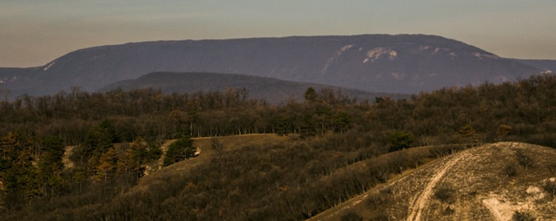
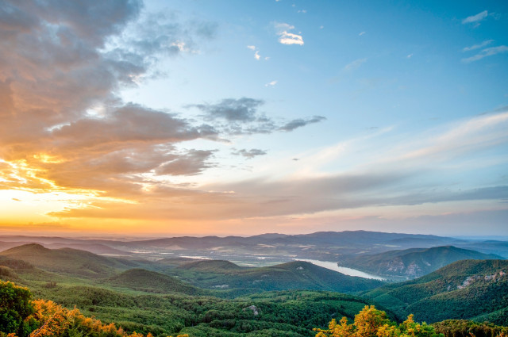
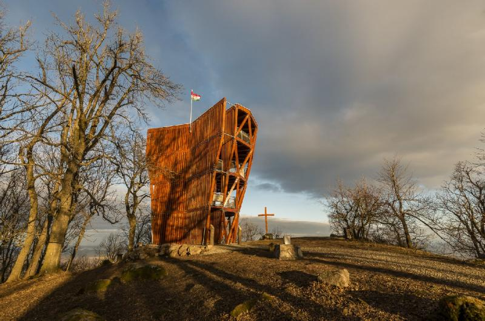
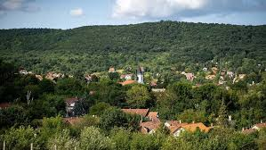

Dobogókő

Dobogókő a Pilis egyik legismertebb kilátópontja, széles panorámával és népszerű kirándulóútvonalakkal. A csúcsról belátható a Visegrádi-hegység nagy része, valamint tiszta időben a Dunakanyar látványos kanyarulata is feltűnik. A terület gazdag túraútvonalakban, amelyek változatos erdei ösvényeken, sziklás részeken és kilátópontokon keresztül vezetnek. A környék különleges hangulata miatt Dobogókő az egyik legnépszerűbb kirándulóhely a természetkedvelők körében.
Prédikálószék

A Prédikálószék a Dunakanyar egyik leglátványosabb és legkedveltebb kilátópontja, amely a meredek sziklapárkányáról drámai panorámát tár a látogatók elé. A kilátás egyszerre mutatja meg a Duna kanyargó vonalát, a Visegrádi-hegység erdős csúcsait és a Dömösi-medence vadregényes tájait. A csúcson található modern kilátóból tiszta időben szinte festményszerű látvánnyal fogadja a kirándulókat a teljes körpanoráma. A változatos túraútvonalaknak köszönhetően a kezdők és a tapasztalt túrázók is találnak kihívást a környéken, így a Prédikálószék méltán vált a Pilis egyik legikonikusabb célpontjává.
Pilisszentkereszt

Pilisszentkereszt egy hangulatos település a Pilis közepén, amelyet sűrű erdők, dombok és nyugodt völgyek vesznek körül. A község hagyományos épületei és gondozott utcái különleges atmoszférát teremtenek, miközben a környéke gazdag kirándulási lehetőségekben. Innen indul számos népszerű túraútvonal, köztük a híres Dera-szurdokba vezető ösvény. A település történelmi érdekességekben sem szűkölködik: a közeli Klastrompuszta egykor ciszterci kolostor otthona volt, amelynek maradványai ma is felfedezhetők. A csendes, természetközeli környezet miatt Pilisszentkereszt ideális hely a pihenésre és kikapcsolódásra vágyóknak.